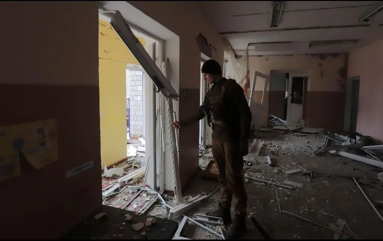

Rusia intensificó ayer su ofensiva en el Donbás, pero continuó los bombardeos en Chernígov y la región de Kiev, pese a haber anunciado un día antes “una reducción radical” de la actividad militar en el norte ucraniano.
Zelenski desconfía del anuncio de desescalada por parte de militares rusosEl Estado Mayor General de las Fuerzas Armadas de Ucrania afirmó ayer que las tropas rusas continúan retirándose de los territorios de las regiones de Kiev y Chernígov, pero consideró que Rusia sólo “ha renunciado temporalmente al objetivo de bloquear” la capital ante “las importantes pérdidas” que ha sufrido. Indicó que Rusia “está acumulando fuerzas en la zona de exclusión de la planta nuclear de Chernóbil”. El portavoz del Ministerio de Defensa de Rusia, Igor Konashénkov, precisó hoy que Moscú lleva a cabo una “reagrupación programada” de las tropas rusas en ambas regiones para poder centrarse en la “liberación del Donbás”.
La ONU acusa a Rusia de realizar al menos 24 ataques con bombas de racimoSirenas y misiles en el norte
“Hubo bombardeos en Chernígov, en la región de Khmelnytsky, varios misiles fueron derribados sobre Kiev”, aseguró ayer el asesor del Ministerio de Interior Vadym Denysenko, a las televisiones locales. “El enemigo demostró una ‘disminución de la actividad’ en la región de Chernígov al atacar Nizhyn”. To go places and do things that have never been done before – that’s what living is all about.
Rusia dice tener nuevas pruebas de programas de armas biólogicas en Ucrania
Rusia aseguró este viernes tener nuevas pruebas, que trasladará a la ONU, de la existencia de supuestos programas de armas biológicas desarrollados en Ucrania con el apoyo de Estados Unidos, una acusación que hasta ahora no ha sido confirmada por fuentes independientes.
Rusia aseguró este viernes tener nuevas pruebas, que trasladará a la ONU, de la existencia de supuestos programas de armas biológicas desarrollados en Ucrania con el apoyo de Estados Unidos, una acusación que hasta ahora no ha sido confirmada por fuentes independientes.
Moscú, que lleva semanas planteando esta cuestión ante Naciones Unidas, dijo que hoy tiene previsto remitir otra carta al Consejo de Seguridad con información adicional.
Photographs by Informador.mx